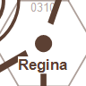
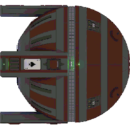
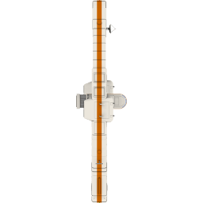

The Traveller Map site works by having a browser-based client application written in JavaScript call various APIs provided by the web site to render map tiles, provide search results, look up coordinates, and so forth. The browser provides the HTML+CSS rendering, layout and interaction engine, the web site provides the content, and the script glues it together.
All of these APIs may be called by other applications. In addition, several other APIs have been exposed specifically for external applications or users to take advantage of.
If you start developing against these APIs in any form, please let me know! Email me at inexorabletash@gmail.com. In addition, the blog is a good source of news and discussion around the site and APIs.
Many APIs take x and y coordinate
parameters. The coordinate system for those values varies
depending on the API. See the Coordinate
Systems documentation for more details.
Common Concepts
Functional APIs vs. Semantic Data URLs
The site exposes the same functions through two different URL schemes. For example, to render a poster-style map of Deneb you can use either of these URLs:
https://travellermap.com/api/poster?sector=Deneb
https://travellermap.com/data/Deneb/image
The first URL is structured based on the function that is being
performed, and takes parameters (defining data to operate on)
and options (that refine the behavior); these URLs start with
a /api/ prefix.
The second URL is structured around the object being operated
on, then specifies the data to retrieve; these URLs start with
a /data/ prefix.
In this case, both URLs expose identical functionality. Not all functions exposed by the first ("api") form have a corresponding second ("data") form – for example, rendering arbitrary rectangles of space, or selecting a sector by x/y coordinates. On the other hand, the data URLs are much easier to remember and share. Both will be supported indefinitely.
Semantic URL Namespace
- Universe
- https://travellermap.com/data – list of all sectors
- Sector
- https://travellermap.com/data/sector – T5 Second Survey format
- https://travellermap.com/data/sector/tab – T5 Tab Delimited format
- https://travellermap.com/data/sector/sec – legacy SEC format
- https://travellermap.com/data/sector/metadata – XML metadata
- https://travellermap.com/data/sector/msec – MSEC metadata
- https://travellermap.com/data/sector/image – map
- https://travellermap.com/data/sector/coordinates – coordinates
- https://travellermap.com/data/sector/credits – credits
- https://travellermap.com/data/sector/booklet – alias for booklet
- sector is name e.g.
Spinward Marchesor T5SS abbreviation e.g.spin
- Quadrant
- https://travellermap.com/data/sector/quadrant – T5 Second Survey format
- https://travellermap.com/data/sector/quadrant/tab – T5 Tab Delimited format
- https://travellermap.com/data/sector/quadrant/sec – legacy SEC format
- https://travellermap.com/data/sector/quadrant/image – map
- sector is name e.g.
Spinward Marchesor T5SS abbreviation e.g.spin - quadrant is one of:
Alpha,Beta,GammaorDelta
- Subsector
- https://travellermap.com/data/sector/subsector – T5 Second Survey format
- https://travellermap.com/data/sector/subsector/tab – T5 Tab Delimited format
- https://travellermap.com/data/sector/subsector/sec – legacy SEC format
- https://travellermap.com/data/sector/subsector/image – map
- sector is name e.g.
Spinward Marchesor T5SS abbreviation e.g.spin - subsector is index
A–Por name e.g.Regina
- World
- https://travellermap.com/data/sector/hex – world data
- https://travellermap.com/data/sector/hex/coordinates – coordinates
- https://travellermap.com/data/sector/hex/credits – credits
- https://travellermap.com/data/sector/hex/jump/jump – worlds in jump range
- https://travellermap.com/data/sector/hex/jump/jump/image – jump map
- https://travellermap.com/data/sector/hex/sheet – alias for world
- sector is name e.g.
Spinward Marchesor T5SS abbreviation e.g.spin - hex is
XXYYe.g.1910 - jump is a number in the range
0—12
Rendering Options and Styles
All of the APIs that produce images (Poster, Jump Map,
Tile) as well as the site itself (including IFRAME) take
an options parameter that is a bit field of rendering style options and a style
parameter that names a visual style/color scheme for the map.
Options
The options are canonically defined in
the script as flags that can be combined
by adding the values together. The options
parameter must be specified in decimal.
Tip: You can use the checkboxes in the table below to compute an options value. Reload the page to see the default options.
| Option | Hexadecimal | Decimal | Notes | |
|---|---|---|---|---|
| SectorGrid | 0x0001 | 1 | Show sector grid. | |
| SubsectorGrid | 0x0002 | 2 | Show subsector grid. | |
| SectorsSelected | 0x0004 | 4 | At low scales, show only some sector names | |
| SectorsAll | 0x0008 | 8 | Show all sector names | |
| BordersMajor | 0x0010 | 16 | Show major region borders. | |
| BordersMinor | 0x0020 | 32 | Show minor region borders. | |
| NamesMajor | 0x0040 | 64 | Show major region names. | |
| NamesMinor | 0x0080 | 128 | Show minor region names. | |
| WorldsCapitals | 0x0100 | 256 | Show important worlds (capitals). | |
| WorldsHomeworlds | 0x0200 | 512 | Show important worlds (homeworlds). | |
| ForceHexes | 0x2000 | 8192 | Never render square hexes. | |
| WorldColors | 0x4000 | 16384 | Use additional world colors for Atm/Hyd. | |
| FilledBorders | 0x8000 | 32768 | Background colors for bordered regions. |
Computed options value: options= (try it)
Some flag values (not listed in the above table) have been deprecated. See the source code for more details. Because URLs may exist that reference them the flags cannot be reused. Going forward, distinct query parameters will be used to control rendering options. In addition, the flags do not correspond 1:1 to options shown on the main map page as the as the UI has evolved and simplified over time. Specifically, the pairs SectorGrid/SubsectorGrid, BordersMajor/BordersMinor, NamesMajor/NamesMinor, and WorldsCapitals/WorldsHomeworlds are always set/cleared together by one checkbox.
Behind the scenes, options values are one input to a style calculation; other inputs include the scale (see below). The options flags (e.g. SectorGrid) only apply at certain scales, per the following table:
| Feature | 1⁄32 | 1⁄16 | 1⁄8 | 1⁄4 | 1⁄2 | 1 | 2 | 4 | 8 | 16 | 32 | 64 | 128 |
|---|---|---|---|---|---|---|---|---|---|---|---|---|---|
| Galaxy | • | • | • | • | • | • | |||||||
| Local Rifts | • | • | • | • | |||||||||
| Random Star Field | • | • | • | ||||||||||
| Important Worlds | • | • | • | • | |||||||||
| Worlds | • | • | • | • | • | • | |||||||
| Worlds (Basic) | • | • | • | ||||||||||
| Worlds (Full Data) | • | • | |||||||||||
| Worlds (UWP) | • | ||||||||||||
| Sector Grid | • | • | • | • | • | • | • | • | |||||
| Subsector Grid | • | • | • | • | • | ||||||||
| Sector Names | • | • | • | • | • | ||||||||
| Subsector Names | • | • | |||||||||||
| Parsecs (Square) | • | • | |||||||||||
| Parsecs (Hex) | • | • | |||||||||||
| Labels (Macro) | • | • | • | • | |||||||||
| Labels (Micro) | • | • | • | • | • | ||||||||
| Borders (Macro) | • | • | • | • | • | • | • | ||||||
| Borders (Micro) | • | • | • | • | • | • | |||||||
| Routes (Macro) | • | • | • | • | |||||||||
| Routes (Micro) | • | • | • | • | • |
Styles
Style values include:
- style=poster
- A color-on-black style that matches the "Spinward Marches" poster included with the Deluxe Traveller boxed set and the Imperium Map poster. This is the default.
- style=print
- A color-on-white style best suited for color printing.
- style=atlas
- A grayscale black-on-white style that matches the visual style of the Atlas of the Imperium and early supplements, best for black-and-white printing.
- style=candy
- A style designed by Wayne Peters that evokes interactive map displays from contemporary movies. Does not show world base or allegiance information, but does illustrate world size and hydrographics.
- style=draft
- A style reminiscent of GDW's original hand drawn draft of the Spinward Marches sector map. (A high resolution scan of the original is available on DriveThruRPG.)
-  style=fasa
- A style reminiscent of FASA's classic supplements and magazines.
- style=terminal
- A style reminiscent of retro-futuristic computer terminals.
Page and API
These options are available when calling rendering APIs, the main page, and IFRAME API.
- dimunofficial=1
- At scales where worlds are shown (dotmap or more), sectors with unofficial data will be dimmed
- review=1
- At scales where worlds are shown (dotmap or more), sectors will be tinted based on T5SS review status: official - red; in review - orange; unreviewed - yellow; preserve - green; apocryphal - magenta.
- routes=0
- Routes are not rendered (macro-scale or micro-scale)
- rifts=0
- Don't shade rifts. The default is to shade rifts.
- sscoords=1
- Hexes are numbered subsector style (0101-0810) instead of sector style (0101-3240)
- allhexes=1
- All hexes are numbered. The default is just to number hexes with worlds.
- nogrid=1
- Hex grid is not rendered. The default is to show a hex grid when zoomed in.
- po=1
- Population overlay: a yellow circle with area proportional to the population of each world is overlayed.
- im=1
- Importance overlay: a green circle representing the world's Importance is overlayed.
- dw=1
- Droyne World overlay: worlds with Droyne populations are annotated with ★, and worlds with Chirper populations are annotated with ☆.
- an=1
- Ancient World overlay: worlds with known Ancient sites are annotated with ☀.
- mh=1
- Minor Race Homeworld overlay: homeworlds of minor races are annotated with ✻.
- stellar=1
- A representation of the system's stars is shown instead of rendering world details. Sizes are not to scale.
- hw=SN
- hw=SN+
- hw=SN-
- hw=SM-M
- Highlight Worlds overlay:
Worlds with a matching characteristic are highlighted. The argument
starts with a field name, one of
StSAHPGLTIx. This is followed by either a value (field is N), a value and - (field is N or lower), a value and + (field is N or higher), or a value and - and another value (field in the range N to M). Note that values are decimal integers (possibly negative), not eHex. (example)
API Only
These options are available when calling rendering APIs, but not the main page or IFRAME API.
- dpr=number
- The image is rendered for the specified
device pixel ratio.
For example, specifying
dpr=2would produce an image at double the resolution, providing better quality for iOS "retina" and other high-density displays. - datauri=1
- The image is returned as a base64-encoded Data URI rather than as binary data. This is useful when requesting images via POST via XHR to insert into HTML.
IFRAME Only
These options are available only when the IFRAME API is used.
- forceui=1
- The page UI (search box, options buttons, etc) is shown. The default is to hide the UI when the map is embedded in another page. Note that not all options may make sense.
HTML APIs
Query Parameters – Main Page
Options:
- scale
- scale in pixels/parsec (default is 64)
- options
- rendering options
- style
- rendering style
- sector
- hex
- specify a location in named coordinates –
hexis optional;scalewill be ignored. - sx
- sy
- hx
- hy
- sy
- specify a location in Sector/Hex coordinates (
scalemust also be explicitly specified) - x
- y
- specify a location in Map-space coordinates
- galdir=0
- Turn off the overlay of galactic directions (Spinward, Coreward, etc)
- q
- perform a search for the given query (example)
- qn
- perform a search for the given query, and navigate to the first result (example)
Markers:
- marker_url=URL
- Marker image URL.
- marker_sector
- marker_hex
- Show a marker at named coordinates (example)
- marker_sx
- marker_sy
- marker_hx
- marker_hy
- marker_sy
- Show a marker at Sector/Hex coordinates (example)
- marker_x
- marker_y
- Show a marker at Map-space coordinates (example)
- marker=URL
- Shortcut: The marker will be placed at the initial map location if the
sectorandhexoptions or a/go/link are used. (example)
Marker images should be a 256px × 256px PNG and will be centered on the specified coordinates. A handful of example markers are available; relative URLs can be used for these. Images by Andrew Boulton, c/o FFE.
res/markers/beowulf.png
| |
res/markers/scout.png
| |
res/markers/fartrader.png
| |
res/markers/submerchant.png
| |
res/markers/subliner.png
| |
|  | res/markers/merccruiser.png
|
res/markers/sdb.png
| |
|  | res/markers/labship.png
|
You Are Here:
A built-in marker type that is style-aware and shows "You Are Here".
- yah_sector
- yah_hex
- Show a marker at named coordinates (example)
- yah_sx
- yah_sy
- yah_hx
- yah_hy
- yah_sy
- Show a marker at Sector/Hex coordinates (example)
- yah_x
- yah_y
- Show a marker at Map-space coordinates (example)
- yah
- Shortcut: The marker will be placed at the initial map location if the
sectorandhexoptions or a/go/link are used. (example)
Overlays:
- ew=date
- Empress Wave overlay: the position of the Empress Wave
at the given date is shown. The date can be specified as one of:
- ddd-yyyy
- Day and Year of the Imperial Calendar, e.g.
ew=132-1116 - yyyy.f...
- Decimal date, e.g.
ew=1116.359 - yyyy
- Year, e.g.
ew=1105 - milieu
- Use the current milieu specified elsewhere, e.g.
ew=milieu
- ox
- oy
- ow
- oh
- oy
- Map-space coordinates for the left, top, width, and height of an overlay or highlight rectangle to place over the map. To specify additional overlay rectangles, include
ox1/oy1/ow1/oh1for the first additional overlayox2/oy2/ow2/oh2for the second additional overlay, and so on. For example, here's the Atlas of the Imperium coverage area. - ocx
- ocy
- ocr
- ocy
- Map-space coordinates for the center and radius overlay or highlight circle to place over the map.To specify additional overlay circles, include
ocx1/ocy1/ocr1for the first additional overlayocx2/ocy2/ocr2for the second additional overlay, and so on. For example, here's the region of space where the bright star Deneb is visible during daylight hours.
Go Links – short URLs for specifying a location on the map
API URLs:
https://travellermap.com/go/sector
https://travellermap.com/go/sector/hex
These URLs navigate the map page, and can be used instead of the longer
?sector=sector&hex=hex syntax.
Example:
IFRAME – embed a map in your page
Usage:
<iframe src="URL" style="STYLE"></iframe>
Where URL is any main page URL, including query parameters and/or go links.
And STYLE is something like:
width: 200px; height: 200px; border: solid 1px black;
Notes:
- You use the same URL as for the main page. The site detects that it's running in an iframe and automatically hides the UI.
- User preferences are ignored, so that you can control the styling and location with parameters.
- You can drag with the mouse and zoom by using the mouse wheel or double-clicking (hold Alt and double-click to zoom out). You can even use the IJKL keys or arrow keys to scroll the map.
- For sites such as Wikis that (for security reasons) do not allow embedding arbitrary IFRAMEs, see the Poster API instead.
- The STYLE of the IFRAME element can be anything you want to match your site – the width and height are just examples
- By default, the UI is hidden. To force the UI to be shown in an iframe, add the URL parameter
forceui=1
Example:
<iframe
src="https://travellermap.com/go/spin/1910?style=print"
style="border: ridge 10px gray;">
</iframe>
Beta Features:
- When the user clicks or double-clicks on the map, a
message event
will posted to the containing page. The
dataelement of the event will have the form:{source: "travellermap", type: "click", location: {x: 19: y: 10}}or:{source: "travellermap", type: "doubleclick", location: {x: 19: y: 10}}
Data APIs
Coordinates – sector lookup and coordinate conversion
API URLs:
https://travellermap.com/api/coordinates?sector=sector
https://travellermap.com/api/coordinates?sector=sector&hex=hex
https://travellermap.com/api/coordinates?sector=sector&subsector=subsector
https://travellermap.com/api/coordinates?sx=sx&sy=sy
https://travellermap.com/api/coordinates?sx=sx&sy=sy&hx=hx&hy=hy
Data URLs:
https://travellermap.com/data/sector/coordinates
https://travellermap.com/data/sector/hex/coordinates
Parameters:
- sector
- specify the sector location by name, e.g. "Spinward%20Marches"
- hex
- specify hex location; optional
- subsector
- specify subsector (
A–Por name); optional - sx
- sy
- sector in sector/hex coordinates
- hx
- hy
- hex in sector/hex coordinates
- x
- y
- location in world-space coordinates
- milieu
- data milieu (e.g.
M1900); optional
Notes:
- The following coordinates are returned:
- Sector/Hex coordinates sx, sy, hx, hy
- World-Space Coordinates x, y
- If
sectoris specified withouthexorsubsector, the coordinates of the top-left corner of the sector are returned. - If
sectorandsubsectorare specified, the coordinates of the center of of the subsector are returned. -
The default output format is JSON. To retrieve results in XML form, specify
the HTTP header
Accept: text/xmlor includeaccept=text/xmlin the query string.
Example:
Credits – get world data for a given location
API URLs:
https://travellermap.com/api/credits?sector=sector
https://travellermap.com/api/credits?sector=sector&hex=hex
https://travellermap.com/api/credits?sx=sx&sy=sy
https://travellermap.com/api/credits?sx=sx&sy=sy&hx=hx&hy=hy
https://travellermap.com/api/credits?x=x&y=y
Data URLs:
https://travellermap.com/data/sector/credits
https://travellermap.com/data/sector/hex/credits
Parameters:
- sector
- specify the sector location by name, e.g. "Spinward%20Marches"
- hex
- specify hex location within the named sector (defaults to 1620 if unspecified)
- sx
- sy
- sector in sector/hex coordinates
- hx
- hy
- hex in sector/hex coordinates
- x
- y
- location in world-space coordinates
- milieu
- data milieu (e.g.
M1900); optional
Notes:
-
The default output format is JSON. To retrieve results in XML form, specify
the HTTP header
Accept: text/xmlor includeaccept=text/xmlin the query string.
Example:
SEC – retrieve UWP data for a sector
HTTP Methods:
- GET
- The sector to output is specified some combination of the following URL parameters:
API URLs:
https://travellermap.com/api/sec?sector=sector
https://travellermap.com/api/sec?sector=sector&hex=hex
https://travellermap.com/api/sec?sector=sector&subsector=subsector
https://travellermap.com/api/sec?sector=sector&quadrant=quadrant
https://travellermap.com/api/sec?sx=sx&sy=sy
Data URLs:
https://travellermap.com/data/sector
https://travellermap.com/data/sector/sec
https://travellermap.com/data/sector/tab
https://travellermap.com/data/sector/subsector
https://travellermap.com/data/sector/subsector/sec
https://travellermap.com/data/sector/subsector/tab
https://travellermap.com/data/sector/quadrant
https://travellermap.com/data/sector/quadrant/sec
https://travellermap.com/data/sector/quadrant/tab
Parameters:
- sector
- sector name or T5SS abbreviation
- subsector
A–Por name; optional – if specified, only UWPs for that subsector will be included- quadrant
- one of
Alpha,Beta,GammaorDelta - sx
- sy
- sector in sector/hex coordinates
- milieu
- data milieu (e.g.
M1900); optional
- POST
-
The body of the request is sector data to be parsed. After successful
parsing, the same data is returned but reformatted according to the
selected options. This can be used to convert
SEC data to
T5 Tab Delimited for easier parsing
by script. The format of the input data is "sniffed" – if it contains
tabs it is assumed to be in
T5 Tab Delimited format; if it
contains extension field delimiters it is assumed to be in
T5 Column Delimited format;
otherwise, it is parsed as
Legacy SEC format.
Parameters:
- lint=1
- Return an HTTP failure (400) if warnings or errors are found while parsing the sector data. The default is to silently ignore any lines with errors.
Options:
- type=SecondSurvey
-
Data Format Definition
The Traveller5 Second Survey format in human readable form:
Hex, Name, UWP, Trade Classifications and Remarks,
Extensions (Ix, Ex, Cx), Nobility (N), Bases (B), Travel Zone (Z), PBG, Worlds (W), Allegiance and Stellar.
Note that fields may be blank if no official T5 data exists.
Second Survey is the default for
/data/URLs. - type=TabDelimited
- Data Format Definition Full Traveller5 Second Survey data, in a more easily parsed format.
- type=Legacy
-
Data Format Definition
Legacy sector format: Name, Hex, UWP, Bases, Trade Classifications and Remarks, Travel Zone, PBG, Allegiance and Stellar.
Legacy format is the default for
/api/URLs - metadata=0
- Don't include sector metadata as comments in the file
- header=0
- Don't include field definitions in the file
- sscoords=1
- Use subsector style (0101-0810) numbering instead of sector style (0101-3240)
Notes:
- The column widths in
SecondSurveyformat are computed dynamically. The header and separator lines must be parsed to identify columns. - The column widths in the legacy format are defined in the header; data may be truncated to fit.
- If you are programatically consuming the data, it is strongly recommended that you use
TabDelimitedformat - If a jsonp query parameter is specified, the results are wrapped in a JSONP callback
Example:
Metadata – retrieve metadata for a sector
HTTP Methods:
- GET
-
The sector to output is specified some combination of the following URL parameters:
API URLs:
https://travellermap.com/api/metadata?sector=sector
https://travellermap.com/api/metadata?sx=sx&sy=sy
Data URLs:
https://travellermap.com/data/sector/metadata
Parameters:
- sector
- sector name or T5SS abbreviation
- sx
- sy
- sector in sector/hex coordinates
- milieu
- data milieu (e.g.
M1900); optional
- POST
-
The body of the request is sector metadata to be parsed. After successful
parsing, the same data is returned but reformatted according to the
selected options. This can be used to convert
XML or MSEC to JSON for easier parsing by script. The input data format is
"sniffed" – if it has an XML prologue it is assumed to be
XML format
(example); otherwise,
MSEC format
(example) is assumed. JSON parsing
is not supported.
Parameters:
- lint=1
- Return an HTTP failure (400) if warnings or errors are found while parsing the sector data. The default is to silently ignore any lines with errors.
Notes:
-
The default output format is JSON. To retrieve results in XML form, specify
the HTTP header
Accept: text/xmlor includeaccept=text/xmlin the query string. - The XML data is the same format as consumed by the Poster API
when using HTTP
POST, described in Sector Metadata File Format.
Example:
MSEC – generate sec2pdf metadata for a sector
API URLs:
https://travellermap.com/api/msec?sector=sector
https://travellermap.com/api/msec?sx=sx&sy=sy
Data URLs:
https://travellermap.com/data/sector/msec
Parameters:
- sector
- sector name
- sx
- sy
- sector in sector/hex coordinates
- milieu
- data milieu (e.g.
M1900); optional
Notes:
- sec2pdf at http://dotclue.org/t20/
- If a jsonp query parameter is specified, the results are wrapped in a JSONP callback
Example:
Jump Worlds – return a list of worlds within N parsecs
API URLs:
https://travellermap.com/api/jumpworlds?x=x&y=y
https://travellermap.com/api/jumpworlds?sx=sx&sy=sy&hx=hx&hy=hy
https://travellermap.com/api/jumpworlds?sector=sector&hex=hex
Data URLs:
https://travellermap.com/data/sector/hex
https://travellermap.com/data/sector/hex/jump/jump
Parameters:
- jump
- jump distance to include (
0through12, default is6) - sector
- specify the sector location by name, e.g. "Spinward%20Marches"
- hex
- specify hex location within the named sector
- sx
- sy
- sector in sector/hex coordinates
- hx
- hy
- hex in sector/hex coordinates
- x
- y
- location in world-space coordinates
- milieu
- data milieu (e.g.
M1900); optional
Notes:
- The short Data URL form (
/data/sector/hex) is an alias for jump 0 — only details for the specified system are returned. - Returns a list of worlds. Each world has the following fields (in no particular order), although fields may be omitted if blank:
NameHexUWPBasesRemarksZonePBGAllegianceStellarIxExCxNobilityWorlds
-
The default output format is JSON. To retrieve results in XML form, specify
the HTTP header
Accept: text/xmlor includeaccept=text/xmlin the query string.
Example:
Search – find worlds or regions by name or attributes
API URLs:
https://travellermap.com/api/search?q=QUERY
Parameters:
- q
- query string
- milieu
- data milieu (e.g.
M1900); optional
Notes:
- Perform a search of names for matching sectors, subsectors, worlds and labeled regions.
- All searches are case-insensitive.
- By default, only matches at the start of names or after spaces are returned. So "
sol" will match "Sol", "Solomani Rim" and "Nowa Sol" but not "Marsol" - Wildcards:
*and%can be used as a "zero or more of any character";?and_can be used as "exactly one character".[]can be used for character ranges, e.g.[0-5]or[m-z]or[89ABC]. For example, "r*a" will match Regina. - Specifying a wildcard within a word turns off the "start of word" match. So "
re*in" will not match "Regina" (but "re*in*" will). - Add
exact:as a prefix to force an exact match, e.g. "exact:sol" will not match "Solomani Rim" - Add
like:as a prefix to do a "sounds like" match, e.g. "like:tear" will find "Terra" - Specify more than one (space-delimited) word in the query to refine the search. Words are joined as logical and clauses. So "
so ri" will match "Solomani Rim" (This combines strangely with wildcards; "sol* ri*" tries to find something matching both "sol*" and "ri*" so nothing will be found!) - Add
uwp:as a prefix to a word to search the relevant fields. Examples:- uwp:a*
- find worlds with class A starports
- t* uwp:*f
- find worlds with names beginning with T that are tech level F
- Similarly, you can use
pbg:,zone:,alleg:to match on PBG, Zone or Allegiance respectively. - Use
remark:to require a specific remark, e.g.remark:Hito limit the results to high-population worlds. - Add
in:as a prefix to a word to search the sector name. Examples:- t* in:spin
- find worlds in Spinward Marches sector begining with T
- uwp:*-f in:"Solomani Rim"
- find worlds with tech level F in the Solomani Rim
- Specifying a search query of XXXXXXX-X (seven alphanumeric characters, hyphen, one alphanumeric character) is a shortcut for
uwp: - Searches are performed on individual items (sectors, subsectors, worlds). You cannot at present do scoped search such as "TL-F worlds in the Solomani Rim"
- Results may appear for items with multiple names (e.g. Solomani Rim sector is known as Kushuggi in Vilani); this is a correct result, although the alternate name is not apparent on the site.
-
The default output format is JSON. To retrieve results in XML form, specify
the HTTP header
Accept: text/xmlor includeaccept=text/xmlin the query string.
Example:
Route – find jump routes between worlds
API URLs:
https://travellermap.com/api/route?start=LOC&end=LOC&jump=N
Parameters:
- start
- start location, e.g.
SPIN 1910 - end
- end location, e.g.
SOLO 1827 - jump
- jump distance (
0through12, default is2)
Options:
- x
- y
- search position in world-space coordinates
- milieu
- data milieu (e.g.
M1900); optional - wild=1
- stops must have wilderness refueling (gas giant or liquid water present)
- im=1
- stops must be member worlds of the Third Imperium
- nored=1
- stops must not be restricted (TAS Red Zones)
- aok=1
- stops at anomalies/calibration points allowed
Notes:
- Returns the shortest path found between the start and end worlds, with the given jump range, if any.
- If the start/end location matches is given as SECTOR HEX,
e.g.
SPIN 1910orSolomani Rim 1827a world at that position will be used. - Otherwise, the nearest matching world with that name will be used, if any.
The
x,ycoordinates are used to determine "nearest" in case of multiple matches. - If the source or end location do not exist, or there is no route found given
the contraints, the request will fail with status
404 Not Foundand a diagnostic message in the body. - Route restrictions (
wild,im,nored) only apply to intermediate stops, not the start/end worlds. -
The default output format is JSON. To retrieve results in XML form, specify
the HTTP header
Accept: text/xmlor includeaccept=text/xmlin the query string.
Example:
Universe – return a list of all sectors
API URLs:
https://travellermap.com/api/universe
Data URLs:
https://travellermap.com/data
Options:
- era
- milieu
- data milieu (e.g.
M1900); optional - requireData
- If
1, only sectors with data files will be included - tag
- Required tags, e.g.
OfficialorInReview. Multiple required tags can be specified using|as a separator, e.g.tag=Official|InReview|Preserve.
Notes:
- Returns a list of sectors providing X,Y coordinates and names.
- The
eraparameter filters on an exact match only; the tagging of sectors with a precise year is sparse - The
tagmatching is case-sensitive. -
The default output format is JSON. To retrieve results in XML form, specify
the HTTP header
Accept: text/xmlor includeaccept=text/xmlin the query string.
Example:
T5SS – return stock data
Data URLs:
https://travellermap.com/t5ss/allegiances
https://travellermap.com/t5ss/sophonts
Notes:
/t5ss/allegiancesreturns a list of items withCodeandNamepairs defining the T5SS allegiance codes./t5ss/sophontsreturns a list of items withCodeandNamepairs defining the T5SS sophont codes.-
The default output format is JSON. To retrieve results in XML form, specify
the HTTP header
Accept: text/xmlor includeaccept=text/xmlin the query string.
Example:
Rendering APIs
Tile – render an arbitrary rectangle of space
API URLs:
https://travellermap.com/api/tile?x=x&y=y&scale=N
Parameters:
- x
- y
- tile-space coordinate
- scale
- scale in pixels/parsec
- milieu
- data milieu (e.g.
M1900); optional
Options:
- options
- rendering options
- style
- rendering style
- w
- width of image to generate (pixels, default 256)
- h
- height of image to generate (pixels, default 256)
- accept
- specify
application/pdffor PDF output orimage/svg+xmlfor SVG; otherwise output depends on options
Notes:
- Generate a PNG or JPEG image of the specified region.
- Coordinates are in tile-space coordinates (optimized for tile rendering, not navigation); conversion functions are in the script
- Bitmap image format depends on selected options ("Candy" produces JPEG, otherwise PNG)
- The HTTP
Acceptheader can be used to specifyapplication/pdforimage/svg+xmlinstead of the query parameter.
Example:
Poster – render a sector, quadrant or subsector
API URLs:
https://travellermap.com/api/poster
https://travellermap.com/api/poster?sector=sector
https://travellermap.com/api/poster?sector=sector&subsector=subsector
https://travellermap.com/api/poster?sector=sector&quadrant=quadrant
Data URLs:
https://travellermap.com/data/sector/image
https://travellermap.com/data/sector/subsector/image
https://travellermap.com/data/sector/quadrant/image
HTTP Methods:
- GET
- The content to render is specified some combination of the following URL parameters:
Parameters:
- sector
- sector name
- quadrant
- one of
Alpha,Beta,GammaorDelta - subsector
- subsector (
A–Por name) - domain
- one of the domains of the Third Imperium (Sylea, Vland, Gateway, Ilelish, Antares, Sol, Deneb)
- x1
- y1
- top-left hex (inclusive) of the rectangle in World-Space Coordinates
- x2
- y2
- bottom-right hex (inclusive) of the rectangle in World-Space Coordinates
- milieu
- data milieu (e.g.
M1900); optional
- POST
-
The content to render is submitted as part of the payload, allowing custom maps to be
rendered. Options (see below) can be specified either as URL parameters or
in the POST body. A specific subsector can be rendered using this parameter,
which can be either part of the POST data or a URL parameter:
Parameters:
- subsector
- subsector index (
A–P) - lint=1
- Return an HTTP failure (400) if warnings or errors are found while parsing the sector data. The default is to silently ignore any lines with errors.
Content-Typeheader:- application/x-www-form-urlencoded
- This is a standard HTML form formatted body. In the POST body,
a field named
datamust contain the sector data and a field namedmetadatamay contain the metadata. - multipart/form-data
- This allows file attachments to be used, as produced by using
an HTML form with
input type="file"elements. An attachment namedfilemust contain the sector data, and an attachment namedmetadatamay contain the metadata. - text/plain
- The body of the request is the sector data. No metadata can be specified using this type. Other options must be specified in the URL.
Options:
- scale
- scale in pixels/parsec (default is 64)
- rotation
- rotate the image, 1 for 90° clockwise, 2 for 180°, 3 for 90° counterclockwise
- hrotation
- rotate rendering within the image (in degrees); useful values are 60 and -60
- clampar=1
- clamp aspect ratio between 4:5 and 1.91:1 (for popular image sharing sites)
- options
- rendering options
- style
- rendering style
- accept
- specify
application/pdffor PDF output orimage/svg+xmlfor SVG - thumb=1
- render a thumbnail (16 pixels/parsec)
Notes:
- Generate a PNG or JPEG image of the specified sector (or just subsector), or an arbitrary rectangle of space.
- Image format depends on selected options ("Candy" produces JPEG, otherwise PNG)
- The HTTP
Acceptheader can be used to specifyapplication/pdforimage/svg+xmlinstead of the query parameter. - The Poster Maker provides a friendly user interface to this API.
Example:
<img src="https://travellermap.com/api/poster?sector=spin&subsector=C&style=atlas&scale=48">
Jump Map – render hexes within N parsecs
API URLs:
https://travellermap.com/api/jumpmap?sector=sector&hex=hex&jump=jump
https://travellermap.com/api/jumpmap?sx=sx&sy=sy&hx=hx&hy=hy&jump=jump
https://travellermap.com/api/jumpmap?x=x&y=y&jump=jump
Data URLs:
https://travellermap.com/data/sector/hex/jump/jump/image
HTTP Methods:
- GET
- The map to render is specified some combination of the following URL parameters:
Parameters:
- jump
- jump distance to render (
0through20, default is6) - sector
- specify the sector location by name, e.g. "Spinward%20Marches"
- hex
- specify hex location within the named sector
- sx
- sy
- sector in sector/hex coordinates
- hx
- hy
- hex in sector/hex coordinates
- x
- y
- location in world-space coordinates
- hrotation
- rotate rendering within the image (in degrees); useful values are 60 and -60
- milieu
- data milieu (e.g.
M1900); optional
- POST
-
The content to render is submitted as part of the payload, allowing custom maps to be
rendered. Options (see below) can be specified either as URL parameters or
in the POST body. The specific hex to render is specified using these paramters,
which can be either part of the POST data or URL parameters:
Parameters:
- jump
- jump distance to render (1 through 12, default is 6)
- hex
- specify hex location within the posted sector
- lint=1
- Return an HTTP failure (400) if warnings or errors are found while parsing the sector data. The default is to silently ignore any lines with errors.
Content-Typeheader:- application/x-www-form-urlencoded
- This is a standard HTML form formatted body. In the POST body,
a field named
datamust contain the sector data and a field namedmetadatamay contain the metadata. - multipart/form-data
- This allows file attachments to be used, as produced by using
an HTML form with
input type="file"elements. An attachment namedfilemust contain the sector data, and an attachment namedmetadatamay contain the metadata. - text/plain
- The body of the request is the sector data. No metadata can be specified using this type. Other options must be specified in the URL.
Options:
- scale
- scale in pixels/parsec (default is 64)
- options
- rendering options
- style
- rendering style
- border=0
- don't render a thick border around the jumpmap
- accept
- specify
application/pdffor PDF output orimage/svg+xmlfor SVG
Notes:
- Generate a PNG image of the specified region.
- PNG images (indexed, 8-bits per pixel) are returned unless PDF is requested; areas outside the hex borders will be transparent.
- The HTTP
Acceptheader can be used to specifyapplication/pdforimage/svg+xmlinstead of the query parameter. - The Poster Maker provides a friendly user interface to this API.
Example:
<img src="https://travellermap.com/api/jumpmap?sector=spin&hex=1910&jump=4&scale=48&style=atlas">
Appendix
Coordinate Systems – the varied esoteric x/y values
Different APIs use different coordinate systems. Future API updates may attempt to unify them, but the different coordinate systems will always be required, as different APIs provide different views on the site dataset.
Named Location
Some APIs support simple named locations, namely the name of a sector followed by a four-digit hex number (in xxyy form). This is inefficient, as the sector must be looked up by name, but is supported for convenience in APIs likely to be specified as URLs directly by humans rather than automatically generated.
The Traveller Map database of sector names accepts multiple spellings and languages for sector
names ("Far Frontiers"/"Afachtiabr", "Dagudashaag"/"Dagudashag", etc) and is case-insensitive.
Remember to URL-encode non-alphanumeric characters (e.g. spaces are %20).
Sectors mapped as part of the Traveller5 Second Survey (T5SS) process can be referenced by abbreviation as well, where the abbreviation is the first 4 letters (e.g. "spin" for the Spinward Marches), or 3 in the case of Ley Sector ("ley");
The Coordinates API will look up a sector/hex location and produce sector/hex
coordinates suitible for further calculations. For convenience, the Jump Map API,
Credits API, IFRAME API, and main page all accept named locations using
sector and hex parameters.
Example: Regina is "Spinward Marches" "1910"
Sector/Hex Coordinates
Sector/Hex are the simplest numeric coordinates. These must be specified as a quartet of (sx, sy, hx, hy). The Core sector is at (0, 0), with positive X being Trailing and positive Y being Rimward. Hex coordinates are 1...32 and 1...40. Note that hx and hy must be specified separately.
Developers should
be aware that many languages (C/C++, JavaScript, etc) will parse numbers with leading 0's as octal, so
08 and 09 give unexpected results.
Use an appropriate parsing function with an explicit radix.
The Coordinates API will map a named sector / hex pair (such as "Spinward Marches", "1910")
to the numeric quartet in this coordinate space.
The Jump Map API and Credits API accept these coordinates using
sx, sy, hx and
hy parameters. The Coordinates API can also accept
these coordinates using those parameters to map to World-Space coordinates.
Example: Regina (Spinward Marches 1910) is (sx=-4, sy=-1, hx=19, hy=10)
World-Space Coordinates
World-space coordinates are more compact than Sector/Hex coordinates, requiring just two numbers. The transformation is simple, and based around Reference (Core 0140). In this scheme, Reference is at (0, 0), positive X is Trailing and positive Y is Rimward. To convert Sector/Hex to world-space coordinates, simply compute the distance to Reference:
var SECTOR_WIDTH = 32;
var SECTOR_HEIGHT = 40;
// Core sector is (0, 0)
var REFERENCE_SECTOR_X = 0;
var REFERENCE_SECTOR_Y = 0;
// Reference is Core 0140
var REFERENCE_HEX_X = 1;
var REFERENCE_HEX_Y = 40;
function sectorHexToWorldXY(sx, sy, hx, hy) {
var x = (sx - REFERENCE_SECTOR_X) * SECTOR_WIDTH
+ (hx - REFERENCE_HEX_X);
var y = (sy - REFERENCE_SECTOR_Y) * SECTOR_HEIGHT
+ (hy - REFERENCE_HEX_Y);
return {x: x, y: y};
}
This scheme is roughly comparable to the canonical Traveller ring/ray system, but
is far more convenient given that the origin is within Charted Space. This coordinate system is used by the
Credits API and the Jump Map API, which require selection of a
specific hex. The coordinates are specified as x and y parameters
The Coordinates API will map a named location (sector, hex)
or sector/hex coordinates (sx, sy, hx,
hy) to world-space coordinates.
Example: Regina is (x=-110, y=-70)
Example: Regina is (-70 + 10000) ring/ray (-110 + 62833), or 9930 ring/ray 62723
Map-Space Coordinates
While world-space coordinates make a lot of sense for describing hexes, the fractional positioning required for precisely positioning the map dictates an additional map-space coordinate system. The conversion from world-space to map-space coordinates requires two steps:
- Account for "odd" hexes being further coreward than "even" hexes – i.e. hex 1910 is further coreward than hex 2010. Also note that odd/even switch places between Sector/Hex and World-space since Reference is at 0140 and (0, 0) respectively.
-
Account for hexes being packed more tightly horizontally than vertically, at a ratio of cos(30°):1, and the
Y-axis is inverted.
This is the only coordinate system with an inverted Y-axis. I don't know what I was thinking. I must have been asleep at the keyboard.
function isEven(n) { return (n % 2) === 0; }
var PARSEC_SCALE_X = Math.cos(Math.PI / 6); // cosine 30°
var PARSEC_SCALE_Y = 1;
function worldXYToMapXY(world_x, world_y) {
var ix = world_x - 0.5
var iy = isEven(world_x) ? world_y - 0.5 : world_y
var x = ix * PARSEC_SCALE_X;
var y = iy * -PARSEC_SCALE_Y;
return {x: x, y: y};
}
This coordinate system is used by the main page and the IFRAME API when a precise view
point is required.
The coordinates are specified as x and y parameters.
Example: Regina is (x=-95.914, y=70.5)
Tile-Space Coordinates
Coordinates used by Tile API are designed so that the basic operations of dragging the map around and requesting new tiles are as simple as possible. If the tile scale, width and height remain constant, the tiles at (0, 0) and (0, 1) are adjacent, and the origin is the same as map-space coordinates. Positive X is Trailing, positive Y is Rimward.
x = map_x * scale / width; y = -map_y * scale / height;
Since this is effectively an image-space coordinate system, standard graphics tricks can be used. For example, to center a tile rendering on a map-space coordinate, use:
x = ( map_center_x * scale - ( width / 2 ) ) / width; y = ( -map_center_y * scale - ( height / 2 ) ) / height;
This coordinate system is only used by the Tile API.
The coordinates are specified as x and y parameters.
Example: Regina would be centered in a 512x384, 48px/pc tile at (x=-9.4919375, y=-9.3125)
JSONP – Use data APIs in your Web pages
APIs on this site output CORS headers so if you know your users will be accessing your site using reasonably up-to-date browsers you can call the APIs directly via fetch or XMLHttpRequest rather than using JSONP trick described below.
Web browsers enforce a Same Origin Policy on content, to stop a page on evilhacker.com from scripting access to your bank account with your stored credentials. This is a good thing! Unfortunately, it also means that sites that want to cooperate have to jump through some hurdles. For example, you can't have a web page on your site that calls directly into one of the APIs on this site (via XMLHttpRequest) from JavaScript. Either the the sites need to have server-to-server communication (which is troublesome to set up, impractical in some circumstances, and introduces its own security issues) or they can play some tricks. JSONP is one of those tricks.
Web browsers allow pages to dynamically add content via script. They can even add references to additional script files, and those files can come from different sites. While a script cannot make AJAX calls to another site to retrieve data, it can cause a script from that site to be loaded just like a local script. The loaded script doesn't have any special abilities – it's still running within the domain of the page. The trick is to request a script with dynamically generated content – the data you wanted to request from the remote site in the first place!
The following APIs on this site support JSONP requests:
- Coordinates
- Credits
- Jump Worlds
- Search
- Universe
- Metadata
- SEC (callback parameter is a single string containing linebreaks)
- MSEC (callback parameter is a single string containing linebreaks)
To get a JSONP response, append &jsonp=callbackfn to your query string,
where callbackfn is the name of the function you'd like the script to call. This is
a function that should be pre-existing in your page, that takes an argument. The argument is
the JavaScript value (usually an object with properties, sub-objects, arrays, etc).
For example, here's how you could implement a search function on your site:
// Call this function with a search query and callback: function jsonp_example(q, cb) { var name = '_cbfun'; var url = 'https://travellermap.com/api/search?q=' + encodeURIComponent(q) + '&jsonp=' + name; var script_tag = document.createElement('script'); script_tag.setAttribute('src', url); window[name] = function(data) { window[name] = null; document.body.removeChild(script_tag); cb(data); }; document.body.appendChild(script_tag); } // Example: jsonp_example('Regina', function(data) { alert('Result count: ' + data.Results.Count); });